Key Metrics
Results at a Glance
| Question | Result | Interpretation |
|---|---|---|
| Average employment effect | Negative but not robust | Weak causal evidence |
| Parallel trends | Violated (food service) | Major identification concern |
| COVID sensitivity | Large change once controlled for | Confounding likely |
| Exposure gradient (β₄) | Inconclusive and confounded | Underpowered, not "no effect" |
| Placebo / permutation / event study / spec curve (β₄) | All 4 flag a pre-existing exposure–outcome link | Convergent evidence, not one fluke |
| Exposure vs. COVID severity | Significant negative correlation | A candidate mechanism — but barely moves the placebo effect once controlled for |
| Multiple-testing correction | None of the 4 confirmatory tests survive Holm | Consistent with "not robust," now formal |
| Leave-one-state-out | Estimate stable across all 20 drops | No single state drives Model A |
| Wage pass-through | 13%/63% of the mandated increase, neither significant | Consistent with underpowered, not "no pass-through" |
| Is treatment predictable from pre-period data? | Yes — 87% accuracy, AUC 0.97 | Another angle on non-random assignment |
| Do states cluster by treatment status? | Yes — 2/3 k-means clusters are nearly pure | Convergent with the predictability result |
Key Figures
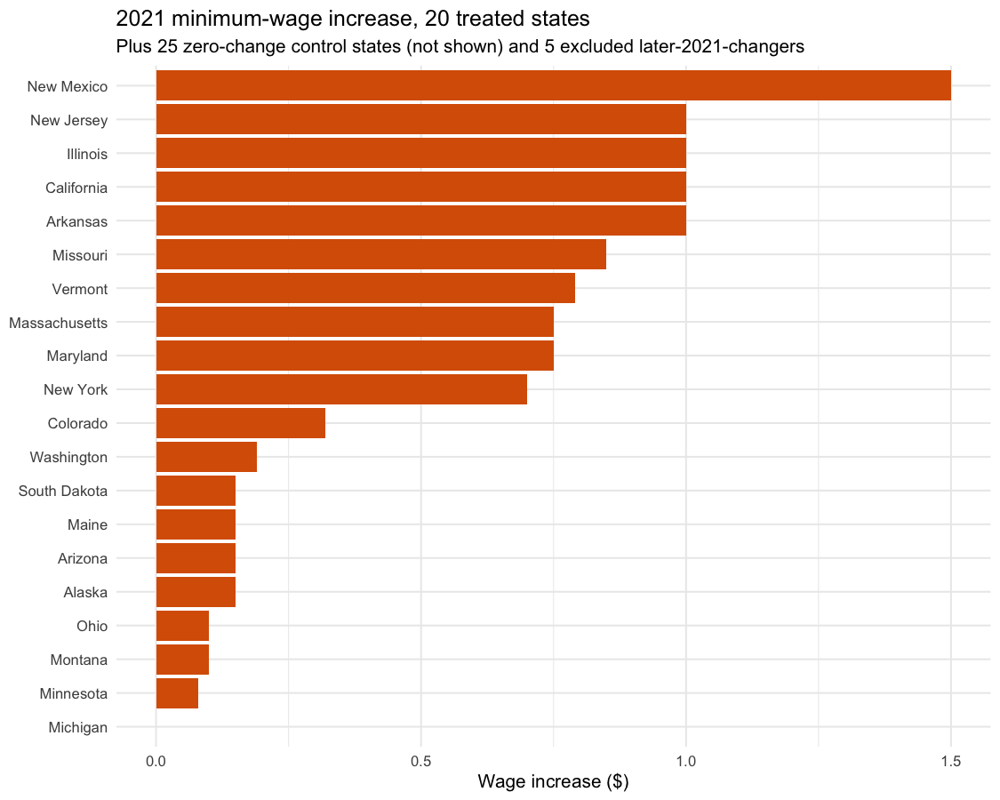
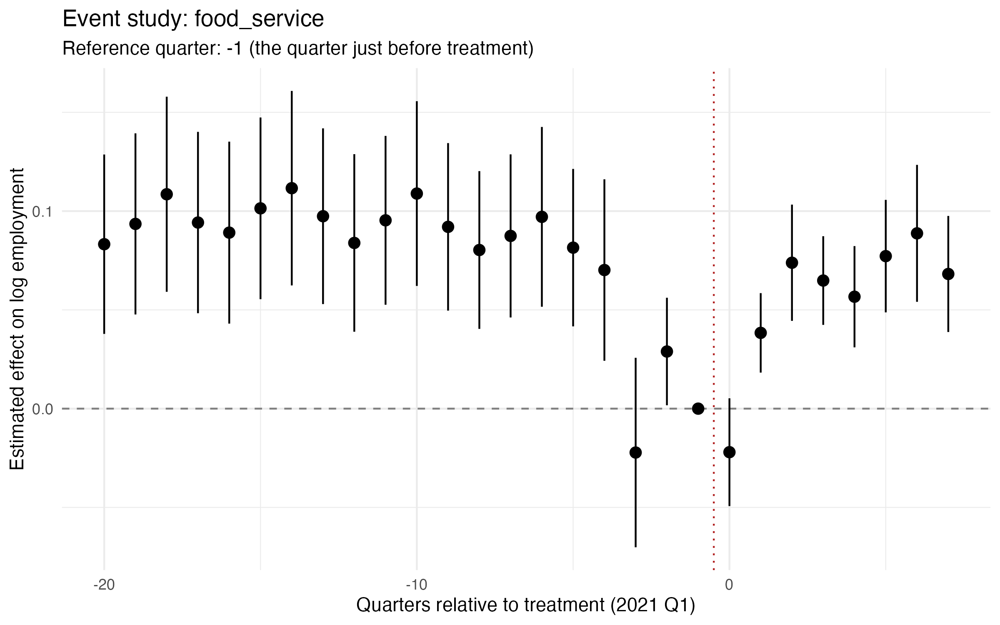
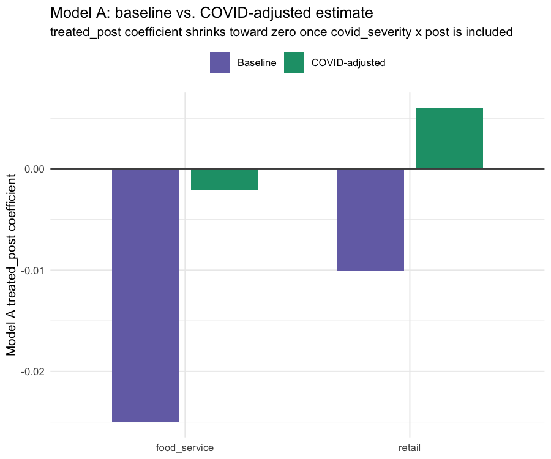
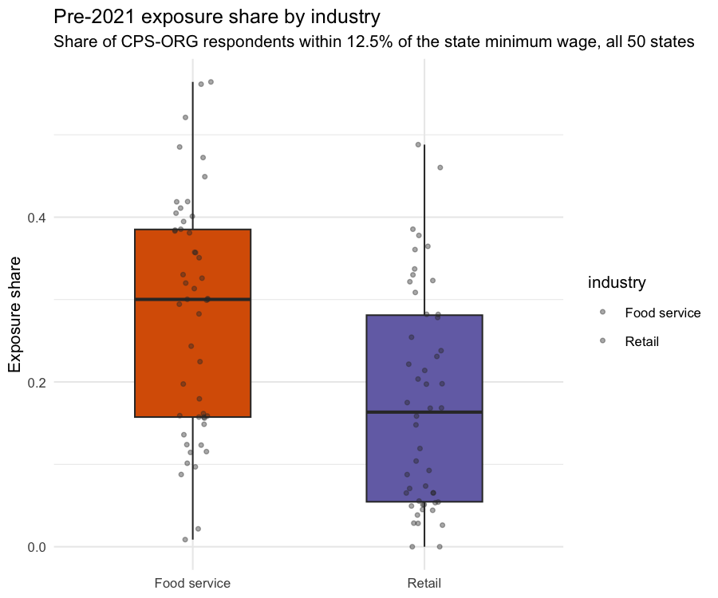
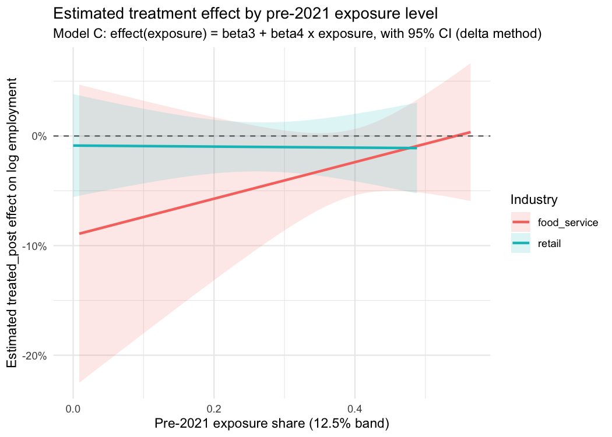
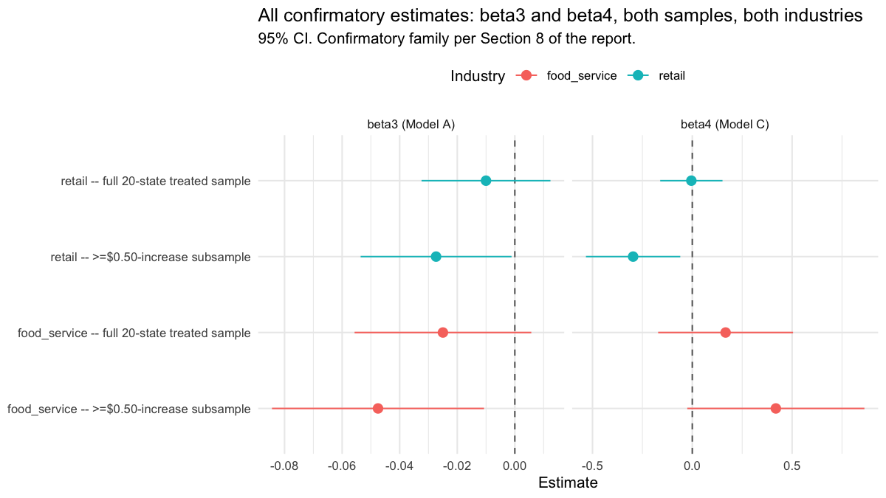
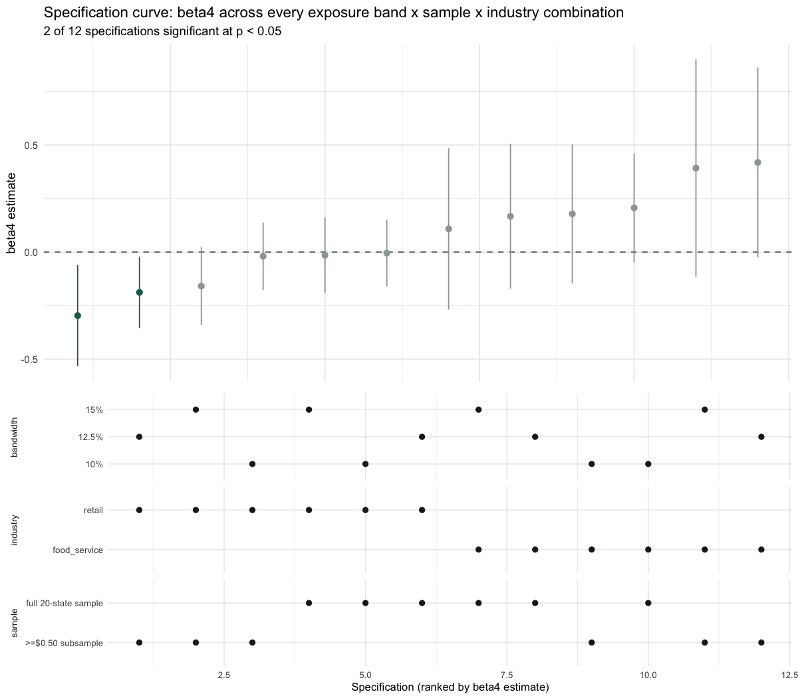
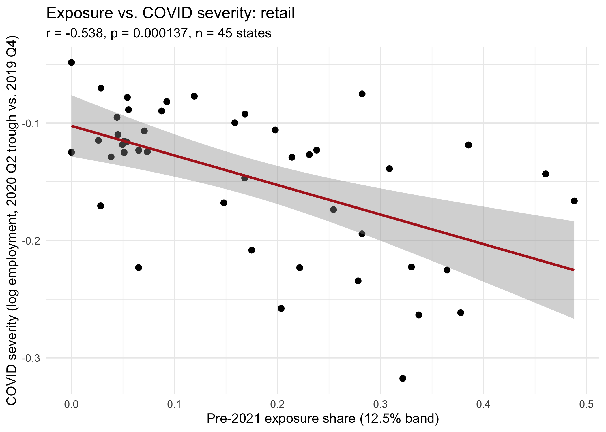
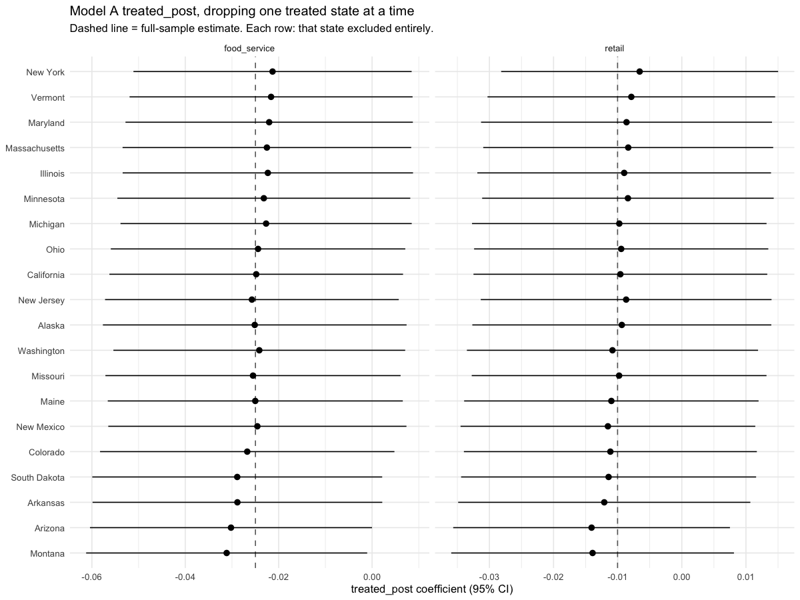
Wage Pass-Through
A new research question, not a re-analysis of the one above: did the 2021 increases actually raise earnings in low-wage industries, and by how much relative to the dollar size of the mandate? Everything above asks whether employment fell; this asks whether the policy did the thing it was actually meant to do.
| Proxy industry | treated_post (log pts) | p | Mandated $/hr | Estimated $/hr | Pass-through |
|---|---|---|---|---|---|
| Leisure & Hospitality (food service proxy) | 0.0044 | 0.647 | $0.54 | $0.07 | 13% |
| Trade, Transportation & Utilities (retail proxy) | 0.0144 | 0.217 | $0.54 | $0.34 | 63% |
Neither estimate is statistically significant, and the food-service
proxy's confidence interval crosses zero on both sides —
consistent with this study's broader theme that these designs are
underpowered at the observed effect sizes, not evidence that
pass-through is genuinely 13%/63%. The likeliest reason both
estimates sit well under 100%: the supersector proxies include large
numbers of workers (hotel managers, arts/entertainment/recreation
staff, wholesale and utilities employees) who were never near the
minimum wage to begin with, diluting any real effect on the
low-wage workers actually targeted. See
R/29_wage_passthrough.R for the full specification
(it reuses Model A's fixed-effects DiD unchanged, just on a
different outcome).
Treatment Assignment: Predictability & Clustering
Exploratory analyses investigating systematic differences in pre-treatment economic structure between treated and comparison states, using techniques not used elsewhere in this project (chi-square test of independence, logistic regression as a classifier, k-means, PCA).
| Check | Result | Method |
|---|---|---|
| Treatment status vs. Census region | Not independent (χ²=8.0, p=0.046) | Chi-square test |
| Treatment status from pre-period growth + exposure | 87% accuracy, AUC 0.97 | Logistic regression, n=45 |
| States cluster by pre-period profile | 2/3 clusters nearly pure treated/control (χ²=28.0, p<0.0001) | Hand-rolled k-means + PCA |
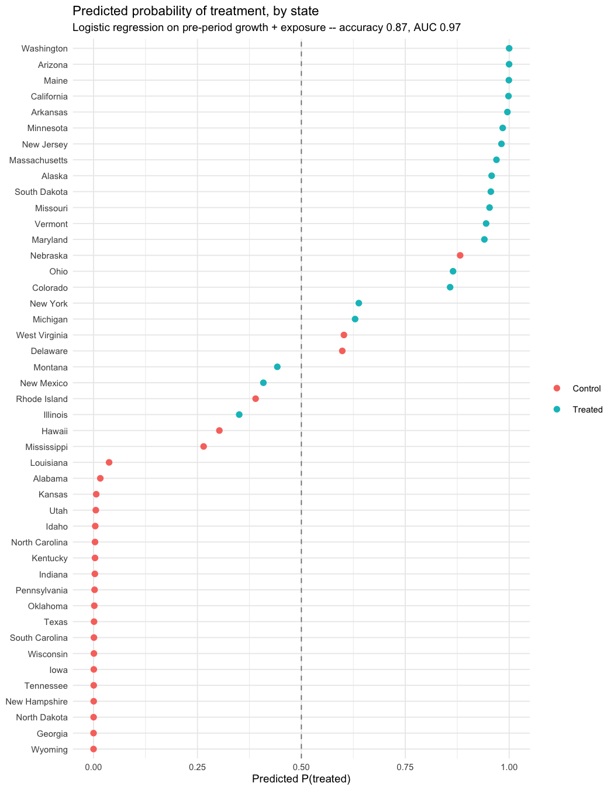
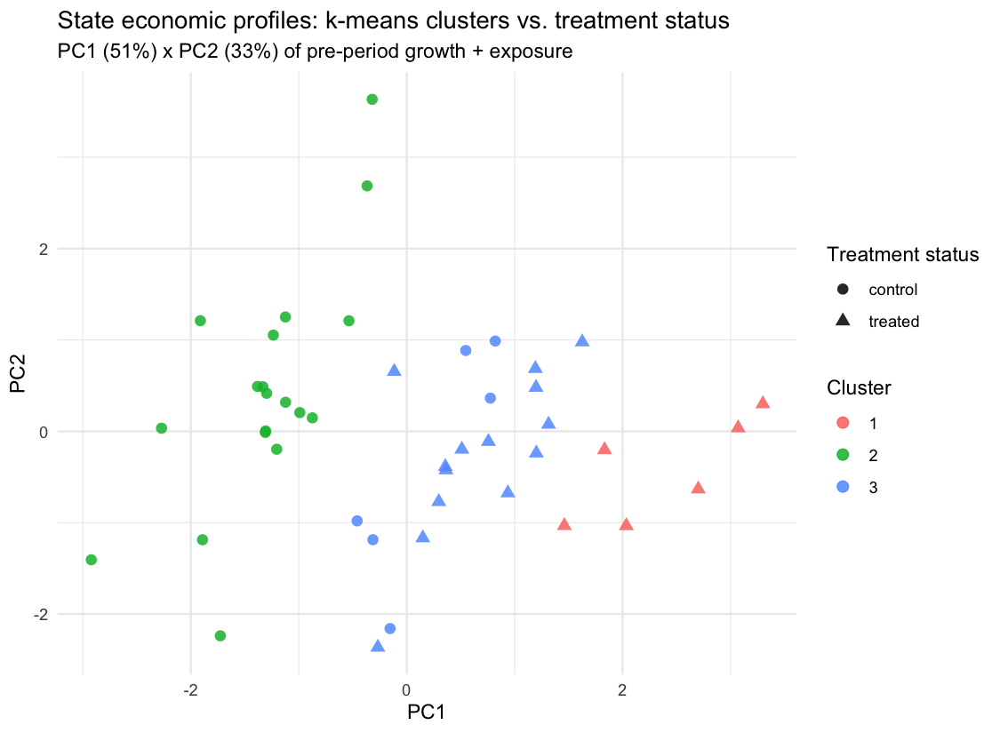
R/30_treatment_predictability.R and
R/31_state_clustering.R.
Machine Learning & Neural Network Extension
A predictive-accuracy comparison, kept separate from the causal claims above: how well can flexible ML methods predict quarterly employment growth for a state they never saw during training, versus a plain linear specification? States — not rows — are held out, since a row-level split would leak within-state structure the causal models' clustered standard errors already treat as non-independent.
R implementation
Extends the study's own pipeline (R/27_ml_prediction.R, R/28_neural_network.R):
- Linear baseline (no fixed effects, so it can generalize to an unseen state)
- Hand-rolled bagged-trees ensemble — bootstrap-aggregated
rparttrees, one fixed random feature subset per tree - Real random forest (
randomForestpackage) — re-samples the feature subset at every split, not once per tree - Real gradient boosting (
gbmpackage) — sequential trees fit to residuals, with the number of trees chosen by 5-fold cross-validation - Single-hidden-layer neural network (
nnet), with train-only standardization
Python implementation
An independent replication in a separate ecosystem (python/), reading the same exported panel:
- OLS via closed-form normal equations (numpy)
- A regression tree built from scratch, with a bagging ensemble, a true random forest, and gradient boosting (sequential residual fitting) on top of it
- PyTorch feedforward neural network
- 21 pytest tests, its own CI job, its own virtual environment
| Model | RMSE | R² |
|---|---|---|
| Linear baseline | 0.0699 | 0.394 |
| Bagged trees | 0.0667 | 0.448 |
| Random forest | 0.0643 | 0.487 |
| Gradient boosting | 0.0536 | 0.644 |
| Neural network | 0.0582 | 0.580 |
Gradient boosting is the strongest predictor of the five — a sensible result, not a foregone one, since boosting's sequential residual-fitting strategy is genuinely different from bagging and random forests' independent-trees-then-average strategy. This is a methods comparison, not a substitute for Model A/C's identification strategy — a model that predicts employment well isn't thereby estimating the policy's causal effect on it. See python/README.md for implementation notes.
Limitations
- Parallel trends violated for food service (event study + two-sample t-test).
- COVID-era differential recovery confounds the treatment window — a real share of the baseline estimate, not the policy.
- Both β₃ and β₄ are underpowered at the observed effect sizes, not just assumed underpowered.
- β₄ is also confounded, not just underpowered — 4 independent checks find high/low-exposure states already differed before 2021.
- The ≥$0.50 subsample and the legislated-only subsample are the exact same 10 states — the two cuts can't be disentangled in this data.
- Small cluster count (20 treated, 45 total) — addressed via clustered SEs and a wild bootstrap, but always some caution.
- Wage pass-through uses broader supersector proxies, not the exact food-service/retail industries — BLS/FRED don't publish earnings at that resolution by state.
- Results are DiD estimates under this specification, not definitive causal effects.
Data Sources
R/29)How to Reproduce
Rscript -e 'renv::restore()' # pinned package versions (renv.lock, R 4.5.1) make all # R/01-R/31, tests, figures, report end to end make test # just the R test suite make report-pdf # PDF export (headless Chrome, no LaTeX needed) make python-setup # one-time: creates python/.venv, installs requirements.txt make python-test # Python ML/NN test suite (python/)
make all needs IPUMS_API_KEY in .env for
R/03, and takes several minutes. Full details, repo
layout, and the day-by-day build log are in the
README
and TIMELINE.md.